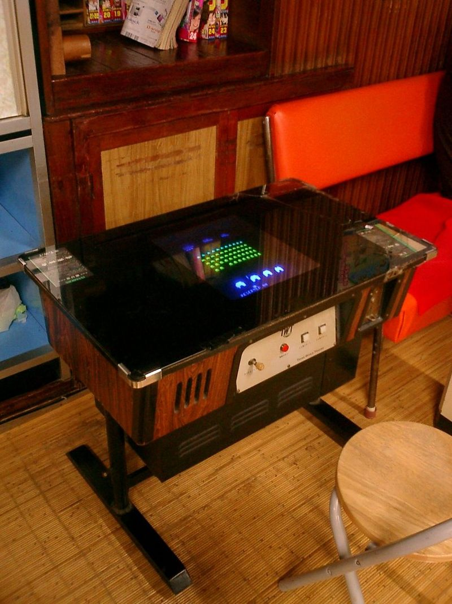

Space Invaders is a 1978 shoot 'em up arcade game developed by Tomohiro Nishikado. It was manufactured and sold by Taito in Japan,
and licensed by the Midway division of Bally for overseas distribution. Space Invaders was the first fixed shooter and set
the template for the shoot 'em up genre. The goal is to defeat wave after wave of descending aliens with a horizontally moving laser to earn
as many points as possible.
Designer Nishikado drew inspiration from Breakout (1976), Gun Fight (1975), target shooting games, and science fiction
narratives such as The War of the Worlds, Space Battleship Yamato and Star Wars. To complete development of the game, he had
to design custom hardware and development tools. Upon release, Space Invaders was an immediate commercial success; by 1982, it had grossed
$3.8 billion (equivalent to over $13 billion adjusted for inflation as of 2016), with a net profit of $450 million. This made it the best-selling
video game and highest-grossing "entertainment product" at the time, and the highest-grossing video game of all time.

Space Invaders was developed by Japanese designer Tomohiro Nishikado,
who spent a year designing the game and developing the necessary hardware to produce it. The game's
inspiration is reported to have come from varying sources, including an adaptation of the electro-mechanical arcade game Space Monsters released by
Taito in 1972, and a dream about Japanese school children who are waiting for Santa Claus when they are attacked by invading aliens.
Nishikado himself has cited Atari's arcade game Breakout (1976) as his original inspiration behind the game's concept, wanting
to adapt the same sense of achievement and tension from destroying targets one at a time, combining it with elements of target shooting
games. The game uses a similar layout to that of Breakout but with different game mechanics; rather than bounce a ball to
attack static objects, players are given the ability to fire projectiles at moving enemies.
Nishikado added several interactive elements that he found lacking in earlier video games, such as the ability for enemies to
react to the player's movement and fire back, and a game over triggered by the enemies killing the player (either by getting
hit or enemies reaching the bottom of the screen) rather than simply a timer running out. He replaced the timer, typical of arcade
games at the time, with descending aliens who effectively served a similar function, where the closer they came, the less time the player had left.
Early enemy designs for the game included tanks, combat planes, and battleships. Nishikado, however, was not satisfied with
the enemy movements; technical limitations made it difficult to simulate flying. Humans would have been easier to simulate,
but the designer considered shooting them immoral. After the release of the 1974 anime Space Battleship Yamato in Japan,
and seeing a magazine feature about Star Wars (1977), he thought of using a space theme. Nishikado drew inspiration for the aliens
from a novel by H. G. Wells, The War of the Worlds, and created initial bitmap images after the octopus-like aliens. Other alien
designs were modeled after squids and crabs. The game was originally titled Space Monsters after a popular song in Japan at the time, "Monster",
but was changed to Space Invaders by the designer's superiors.
Because microcomputers in Japan were not powerful enough at the time to perform the complex tasks involved in designing and programming Space Invaders,
Nishikado had to design his own custom hardware and development tools for the game. He created the arcade board using the latest microprocessors
from the United States. The game uses an Intel 8080 central processing unit (CPU), displays raster graphics on a CRT monitor using a bitmapped framebuffer,
and uses monaural sound hosted by a combination of analog circuitry and a Texas Instruments SN76477 sound chip. The adoption of a microprocessor was
inspired by Gun Fight (1975), Midway's microprocessor adaptation of Nishikado's earlier discrete logic game Western Gun, after the designer was impressed by the
improved graphics and smoother animation of Midway's version. Space Invaders also adopted the multi-chip barrel shifter circuit first developed by Midway for
Gun Fight, which had been a key part of that game's smoother animation. This circuit allowed the 8080 CPU to shift pictures in the graphics framebuffer faster
than it could using only its own native instructions.